Is This The Real Life? Is This Just Fantasy? (Inferential Statistics)
Samples and Populations
So far, the statistics that we’ve done and described have been focused on sample data - the data that a reseracher collects and / or analyzes. For example, when we calculate the mean of a sample, we are reporting the statistic that is closest to all the scores in our sample of data. When we calculate a slope, we are describing how one variable is related to another variable in our sample of data.
Researchers are rarely interested in only their sample, but instead want to learn about a broader population - that is, all the individuals who might be relevant to a researcher’s question.
As we will discuss, thinking about who would be the population for a research question, and then identifying who is in the sample, is a critical step for understanding and evaluating the interpretation of the data.
The sample is always clearly defined and reported in the “Methods” section, where researchers describe (in detail) the number (sample size = n) and demographic features of the people they studied.
The population is not often clearly defined or reported, but can be inferred by thinking about all the possible people who could be affected by, or relevant to, the researcher’s question.
Below are a few examples of reserach questions, populations, and the specific samples that researchers studied.
Everyone in the world who could be happy and have an income.
“Participants were 33,391 employed adults living in the United States. The median age was 33, the median household income was $85,000/year (25th percentile = $45,000; 75th percentile = $137,500; mean = $106,548; SD = $95,393), 36% were male, and 37% were married.”
Your final project research question.
Who is in the population?
Who will be in your sample?
When the Sample Doesn’t Equal the Population
Researchers rarely, if ever, have access to the full population of data, and thus must use the sample to make a guess (or inference) about the population. For example, doctors don’t drain a person of all their blood in order to learn about the person’s health, but trust that the sample will give them valid information about what’s going on in the whole body. That’s not always the case, however, and an important task for researchers is to consider the possibility that they are wrong.
The key question is then, how can we trust that the information we learn from the sample is at all related to the broader population? This is hard to do, and the focus of this chapter. In fact, there are two reasons why we would expect that the sample will not, in fact, equal the population.
Sampling Error describes when the sample is different from the population because of random reasons. A good sample will be random sample, meaning that each individual in the population has an equal chance of being selected for the sample. Even if this is the case, there’s always going to be some differences between the individuals in the study, and the individuals in the population. As you’ll learn in the section below, researchers use statistics to try and estimate how much sampling error might influence their results, and try to design studies to limit the extent that sampling error can affect their results.
Sampling Bias describes when the sample is different from the population because of predictable (or non-random) reasons. A blood sample would be biased if we knew there was something systematically different about the blood that was drawn from the arm vs. the hand vs. the neck vs. the part of your foot between your toes. Identifying sampling bias requires some critical thinking skills that we will practice in the section below, and our goal as researchers will be to identify possible sources of bias, and minimize their influence (or do new studies to test their influence.)
Let’s start with sampling bias, because it’s a lot shorter and easier to understand :)
Sampling Bias
Evaluating Whether Sampling Bias Exists
There are three questions to consider when evaluating whether sampling bias is influencing the results.
What is the research question, who is the population relevant to this question, and who is in the sample? This first question (…okay, technically three questions) asks you to define the key features of the study (as described above.)
Is the sample representative of the population, or is there a systematic bias? The second question asks you to evaluate whether the people in the sample are predictably different from the people in the population. This will almost always be true - most psychological research questions are relevant to people across the world, and it’s very difficult to ensure that everyone in the world has an equal chance of participating in the study.
Is this bias related to the dependent variable? (Will the bias influence the results?) The final question is the hardest, and most important, to consider.
Obama Polling Example : Sampling Bias
Below are data from 20121, when Barack Obama was running against Mitt Romney in the US Presidential Election. Look over the data, and think about the answers to the three questions to evaluate sampling bias.
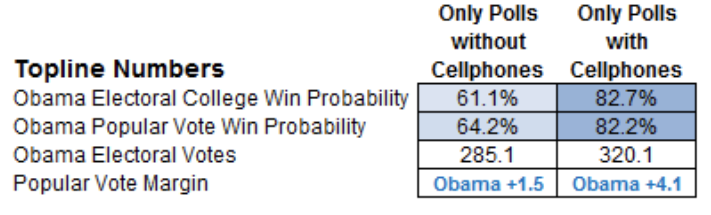
What is the research question, who is the population relevant to this question, and who is in the sample?
the question : who are people going to vote for US President in 2012?
the population : all voters / likely voters in the US.
there are multiple samples : some polls only sample people without cell-phones by randomly calling people who have landline phones. other polls sample people with landlines or cell-phones.
Is the sample representative of the population, or is there a systematic bias?
no! the sample is not representative of the population. not all voters have landline phones (or cell-phones, but more folks have cell-phones these days). So while both samples are biased, the samples that only include landline phone owners are more biased than the samples that include both landlines and cell-phone owners.
Is this bias related to the dependent variable? (Will the bias influence the results?)
the bias is related to the dependent variable / research question. landline phone owners will tend to be older, and older voters tend to vote more conservative.
You can see this bias in the data; Obama (the more liberal candidate) was predicted to win by less in the studies that only sampled landline phone owners.
Types of Sampling Bias
The sampling bais in this example would be labeled exclusion bias; below are a few other common types of biases.
Self-Selection Bias : People volunteer to be in a study, and there’s likely something different about someone who might choose to be in a study compared to someone who may not want to be in a study in ways that might influence the results.
Survivor Bias : Participants often drop out of a study, especially those where you are following the participant over a long period of time. Researchers therefore are only collecting data from a specific group of people who “lasted” through the study. I experience this with my check-ins; the students who rate how the class is going are biased, because they are the ones who haven’t quit out of boredom or anxiety.
WEIRD Samples. Read the short article “A WEIRD View of Human Nature” that describes how most psychologists get samples for their studies. Focus on the following key ideas: the definition of WEIRD; the frequency and influence of cross-cultural research on sampling biases.
Another Example
What is the POPULATION for “Rate My Professor” (a website where students rate the quality of a professor they have had)?
All the people in the world.
All the students in the world.
All the students who have taken a specific professor’s course.
All the students who wrote a review about the course.
All the students who read the reviews.
What is the SAMPLE for “Rate My Professor” (a website where students rate the quality of a professor they have had)?
All the people in the world.
All the students in the world.
All the students who have taken a specific professor’s course.
All the students who wrote a review about the professor’s course.
A statistical term that describes participants who are more than three standard deviations from the average of a variable.
This is a term that psychologists no longer use because it is dehumanizing
None of the above.
According to the article on cross-cultural differences in psychology…
Effects that are “fundamental” do not differ across cultures.
Certain areas of psychology, like visual perception, do not differ across cultures.
Most psychological researchers put effort into examining cross-cultural differences.
All of the above.
None of the above.
Dr. Researcher wants to study people’s attitudes about marijuana. According to the Professor’s video in the reading notes, which of the following would be an example of sampling bias?
Dr. Researcher surveys people living in the Bay Area (where people tend to have more positive attitudes about marijuana than people living in other places).
Dr. Researcher surveys people living in Lytle, Texas (where people tend to have more negative attitudes about marijuana than people living in other places).
Dr. Researcher surveys people wearing white t-shirts (a factor that is unrelated to attitudes about marijuana).
Both A and B
all of the above.
Piff, P. K., Dietze, P., Feinberg, M., Stancato, D. M., & Keltner, D. (2015). Awe, the small self, and prosocial behavior. Journal of personality and social psychology, 108(6), 883. LINK TO FULL ARTICLE
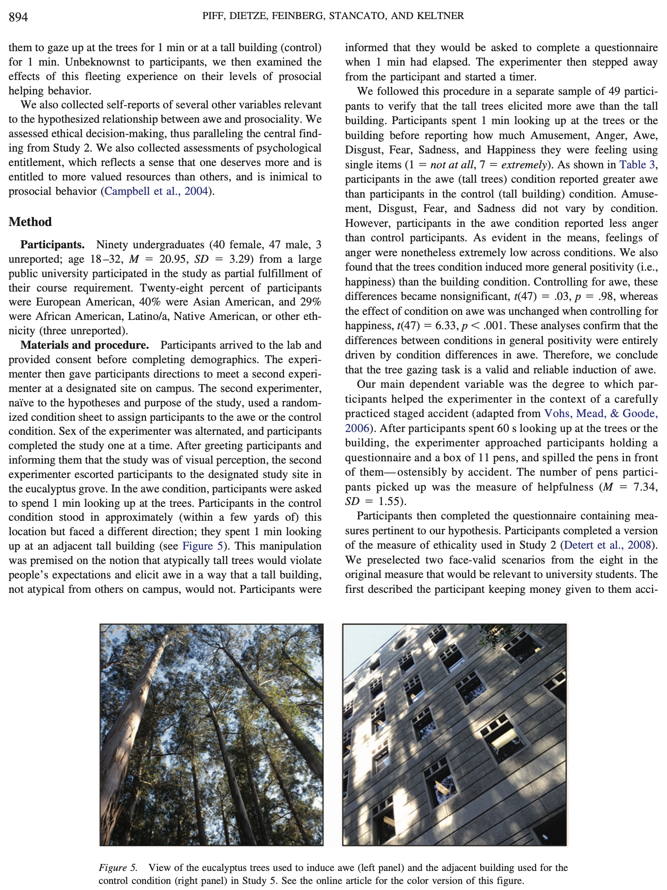
Sampling Error (Conceptual)
Thinking Through a Population
Okay, this may seem a little strange, but I’ll need your full attention for this part of the chapter. Please place your left and right hand thumbs and index fingers together to make a triangle with your two hands. Spread your other fingers forward, so you are using your full hand to make this power triangle.
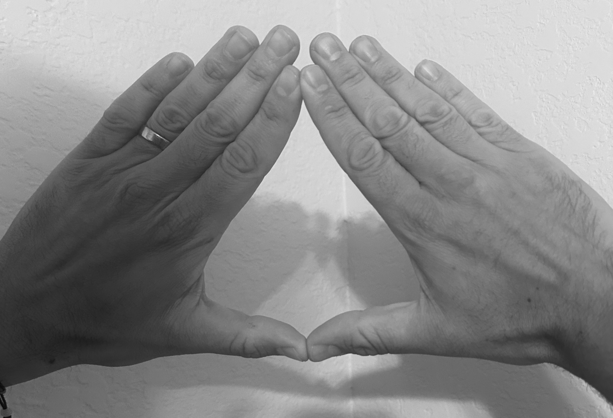
Okay, now please place your thumbs in between your eyebrows, and stare at the triangle below. While you stare, say “na-na-na-na-na-na-na-na-na-na” (repeating) - starting as quiet as you can, and getting as loud as you feel comfortable for no less than 5 seconds and no more than 15 seconds. I’ll give you a moment to do this.
Wow. Did you feel that power? You did, right?? Yeah. Amazing.
What we’ve done - through the power of triangles (the strongest shape, both physically and psychologically) - is generate a dataset2 that we will consider to be a population of data.
I’ve named this dataset babby, and it has two variables for 40000 individuals - one IV and one DV.
IV DV
1 -0.72974695 0.7393607
2 1.55894120 -0.8977654
3 1.87894858 -0.4780742
4 0.36830861 -0.9365583
5 0.02805939 1.5690341
6 2.18060600 -2.1974925
nrow(babby)
[1] 40000
If we graph these variables, we see that they appear to each be normally distributed.
par(mfrow =c(1,2))hist(babby$IV, col ='black', bor ='white', main ="Histogram of IV", xlab ="Independent Variable")hist(babby$DV, col ='black', bor ='white', main ="Histogram of DV", xlab ="Dependent Variable")
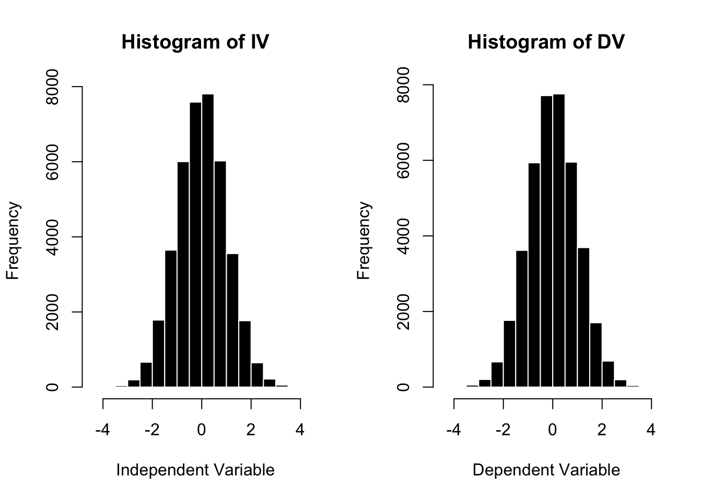
And if we plot the relationship between these two variables, we find that there is no relationship between the DV and the IV. Content warning - some students find the image below existentially terrifying. (What do you see in the graph below? What does this say about you and your personality?)
par(mfrow =c(1,1))plot(DV ~ IV, data = babby, pch =19, main ="Relationship Between DV and IV", xlab ="IV", ylab ="DV")mod <-lm(DV ~ IV, data = babby)abline(mod, lwd =5, col ='red')
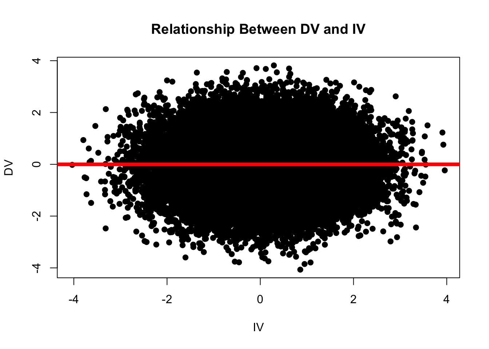
R confirms that there is no relationship between these two variables - the slope for the IV rounds (to ten decimal places) to zero.
coef(mod)
(Intercept) IV
-1.110223e-18 -6.306146e-16
round(coef(mod), 10)
(Intercept) IV
0 0
So to recap, we have a population of data (40,000 individuals) for whom the “true” relationship is zero.
Using R to Define a “Perfectly Random Sample”
As described above, psychologists will almost never have access to the true population of data. Instead, they take a “sample” from the population. When every individual in the population has an equal chance of being selected for this sample, we can say the sample is a “random sample”. When there are certain individuals who are more or less likely to be included in the sample, we say the sample has “bias”.
Most samples in psychology are biased; taking a random sample from the population as a psychological researcher is incredibly difficult, if not impossible. However, even if you were to take a perfectly random sample from the population, you should expect your sample to differ at least a little from the broader population.
We can illustrate this in R. R has a built-in function called sample(), which takes a random sample3 of whatever numbers you give it. For example, here’s a fun game - think of a number between 1 and 10. Then ask R to sample() a random number between 1 and 10 and see if you are vibing with R. I am thinking of the number FOUR.
In the code below, I’m asking R to define the numbers 1 through 10, and then draw ONE number from this set.4
set.seed(42)sample(1:10, 1)
[1] 1
R chose the number 1. We are not vibing. But every time I run the sample() function again, I’ll get a new random number every time.
sample(1:10, 1)
[1] 5
sample(1:10, 1)
[1] 1
sample(1:10, 1)
[1] 9
sample(1:10, 1)
[1] 10
sample(1:10, 1)
[1] 4
Okay, go ahead and try this yourself - think of a number, and let us know on Discord how many times it took you to run the sample(1:10, 1) function before R chose your number. (Or not.)
We can use this function to ask R to take a “perfect” random sample from our population. I’m going to adapt the code a bit to draw a random sample from the babby dataset.
babby[ , ] # this code indexes the babby dataset. the dataset is two dimensional; I can instruct R to select specific rows before the comma, and columns after the comma.
sample(1:nrow(babby), 10) # this code instructs R to select specific rows (since it comes before the comma), and tells R to take a random sample of 10 numbers, starting with the number 1 and going through however many rows babby has (in this case, 40,000).
after the comma, I have no code, which tells R to give me all the columns (in this case two - the IV and DV)
As you can see in the above output, R has drawn a random sample of 10 individuals from the list of 40,000. If I run this code again, R will select another 10 individuals from the list of 40,000.
Okay, we finally have a perfectly random sample of the population - sampy. If we were researchers, we would use this sample to learn something about what the population is like and, like before, define a linear model to examine the relationship between the DV and IV.
plot(DV ~ IV, data = sampy, pch =19, main ="Relationship Between DV and IV in SAMPY", xlab ="IV (from sampy)", ylab ="DV (from Sampy)")modS <-lm(DV ~ IV, data = sampy)abline(modS, lwd =5, col ='green')
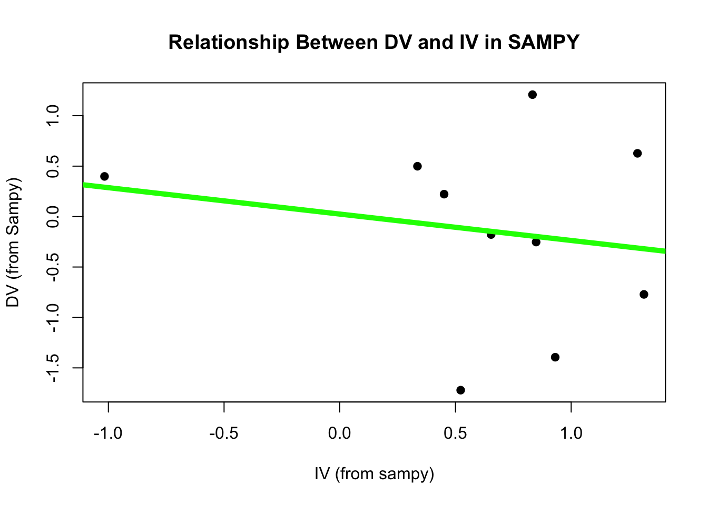
round(coef(modS), 5)
(Intercept) IV
0.02525 -0.26201
summary(modS)$r.squared
[1] 0.03484331
Our sample has error - it is not showing us the true nature of the population.
Indeed, we could ask R to generate 10 random samples of 10 individuals, and see these errors repeat.
par(mfrow =c(2,5))for(i inc(1:20)){ sampy <- babby[sample(1:nrow(babby), 10), ]plot(DV ~ IV, data = sampy, pch =19, main ="Another Sampy", xlab ="IV", ylab ="DV") modS <-lm(DV ~ IV, data = sampy)abline(modS, lwd =5, col ='green')}
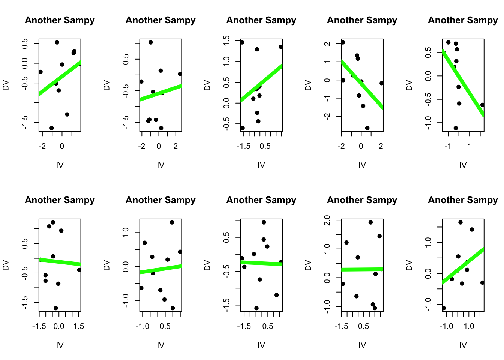
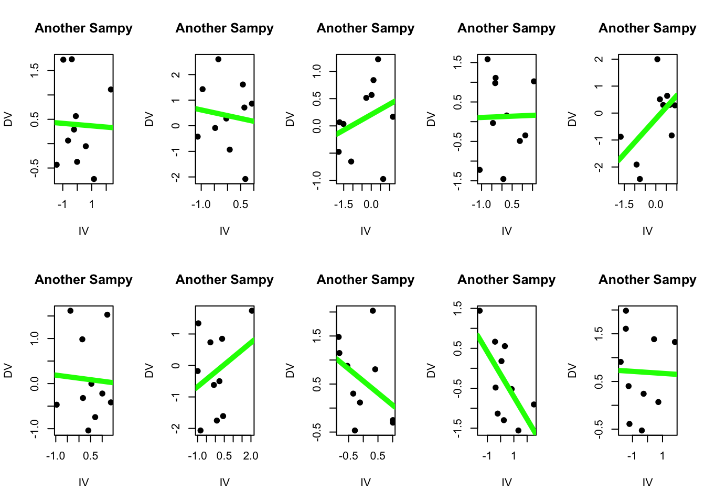
coef(modS)
(Intercept) IV
0.69109563 -0.02107053
In none of these samples does the slope equal exactly zero - which as we know is the “true” slope of our population. Some may be close, but none are exact - they all have some degree of error. Sampling error. (Whoa.)
Improving the Quality of These Samples
“But wait, Professor…” I can hear you scream in your mind (actively engaged while reading this text), “these are not very good samples! The sample size was only 10! We can get a better estimate of the population if we survey more people!”
Yes, my dear actively engaged student, you are correct. And yet, there will still be sampling error. We can increase the size of the random sample that R takes by changing the code to define sampy such that it is a random sample of 150 individuals from babby : sampy <- babby[sample(1:nrow(babby), 150), ]
Here are 10 more linear models from 10 random samples of babby, each with a sample size of 1505.
What do you notice when looking at these different linear models?
## Random Samples: n = 150par(mfrow =c(2,5))for(i inc(1:20)){ sampy <- babby[sample(1:nrow(babby), 150), ]plot(DV ~ IV, data = sampy, pch =19, main ="Big Sampy", xlab ="IV", ylab ="DV") modS <-lm(DV ~ IV, data = sampy)abline(modS, lwd =5, col ='green')#print(coef(modS))#print(summary(modS)$r.squared)}
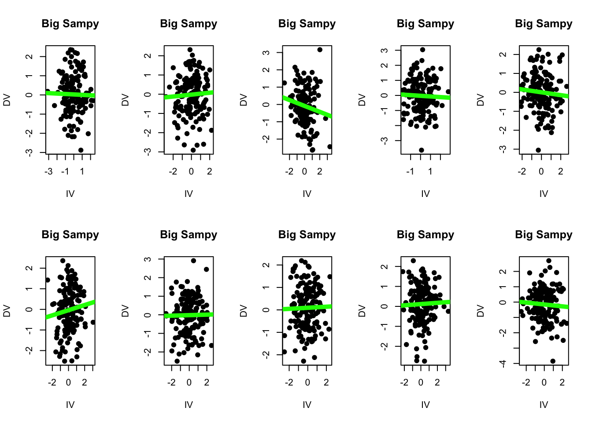
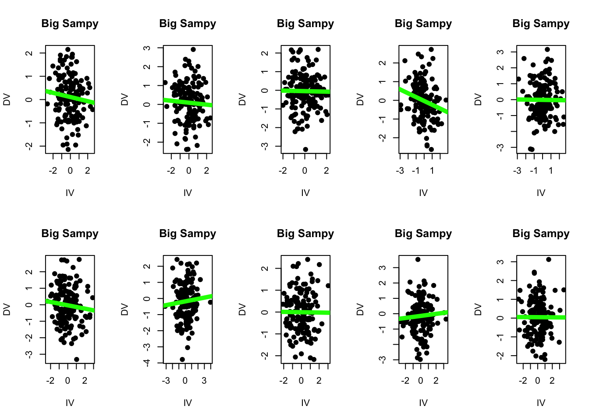
I notice a few things :
Each sample, as instructed, has 150 individuals in the dataset. I can see there are more dots in each scatterplot. Good to know that R did what I asked.
None of the lines appear to have a slope of exactly zero, like our population does. A few are close (the third linear model on the top row has a slope = 0.003 and an R2 = 0.000011 - close to zero but not exaclty zero! there is still some error!!!)
I can see that there’s less variation in the steepness of the lines. Some slopes (like top row fourth column) appear steeper than others, but I see less extremes in the variation in these slopes when I have a sample size = 150 than when I have a sample size = 10. (I can see this because the green lines are more similar to each other when n = 150 than when n = 10.)
This last point is a critical idea : we can “visualize” sampling error by thinking about how much the slopes from multiple samples differ from each other.
A small amount of sampling error would mean that each sample is very similar to the “truth” of our population. If sampling error is small, we’d expect to see very little variation in our slopes across different samples.
A large amount of sampling error would mean that each sample is VERY DIFFERENT from the “truth” of our population. If sampling error is large, we’d expect to see a lot of variation in our slopes across different samples.
Below, I illustrate sampling error by asking R to take a random sample from my population (where the “true” slope = 0), save the value of the slope from this sample, and then repeat this process 1000 times.
The graphs below show histograms of these 1000 slopes for a sample size of n = 10 (on the left) and n = 150 (on the right). I’ll walk through the graphs below in more detail, but at first glance you can hopefully see that there’s less variation in our slopes when the sample size is 150 than when the sample size is 10.
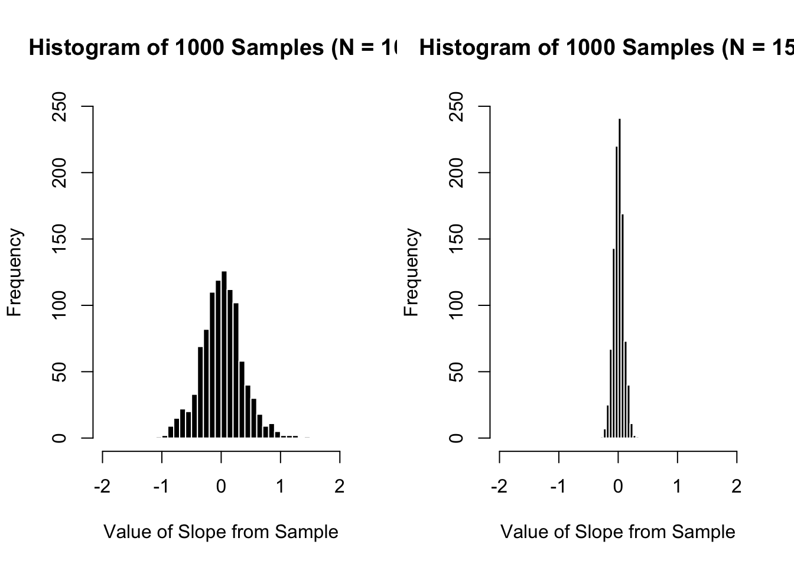
The graph on the left reports the slopes of 1000 samples when the sample size = 10.
The graph on the right reports the slopes of 1000 samples when the sample size = 150.
The range of these random samples (n = 10) was between -1.56 and 1.46.
The standard deviation of these 1000 slopes is .37, which tells us that the “average” random sample differs from the mean by about .37.
The mean of these 1000 slopes is zero (which is the “true” population mean!!!).
The range of these random samples (n = 150) was between -0.24 and 0.26.
The standard deviation of these 1000 slopes is .08, which tells us that the “average” random sample differs from the mean by about .08.
The mean of these 1000 slopes is zero (which is the “true” population mean!!!)
SPOOKY : Distribution of “Random” Sample Estimates Will Alwasy Be Normally Distributed and Centered Over the Population Mean.
When taking a random sample from the population, we always expect to see a “normal” / symmetrical distribution that is centered over the mean of the population. (This is called the Central Limit Theorem.)
The distribution of sample estimates (what happens to the slope if we ask R to take a random sample of the population) will always be normally distributed, since a) each estimate is determined by multiple individuals (“There are multiple explanations for why the variation occurs (life is complex!)” and b)“these multiple explanations occur randomly” (since R is using very good randomization techniques.)
TLDR : IF we are drawing random samples from a population, we can expect that the distribution of estimates from multiple samples (the many slopes that we find) will be normally distributed. We care about this because if we can predict what random sampling will look like, it will allow us to estimate the amount of variation caused by random sampling error. And we can then build that estimate of sampling error into our model, and try to estimate how “wrong” our sample might be. To be clear, all of this is made up - a replication is the best thing to do if you really want to know whether your sample is representative of the population. But replications can be expensive in terms of time and money, and the “publish or perish” beast must be fed.
In the next part, you’ll learn about a very common way researchers try to estimate sampling error.
Estimating Sampling Error With Null Hypothesis Significance Testing (NHST)
The goal of NHST is to estimate how much sampling error might be influencing the results. Again - we are making things up here - without repeatedly taking samples from the data, we don’t actually know how much sampling error might be influencing the results. But in theory, it’s better to have an estimate of sampling error (even if it’s wrong) than just pretend that our sample is THE TRUTH™.
NHST : A Written Explanation
Null Hypothesis Significance Testing : An Assumption that the Null Hypothesis is “True”
Null Hypothesis Significance Testing (NHST) starts with the assumption that the null hypothesis is “true”. You can remember this important detail by noting the phrase starts with “Null Hypothesis”.
If the null hypothesis is “true”, then you would not expect to find a relationship between the two variables (since researchers’ theory - the alternative hypothesis - is often predicting that some relationship between two variables exists).
In other words, if the null hypothesis were true, you’d expect to find a slope of zero - no relationship.
If you DID NOT find a slope of zero in your study, then there are two possibilities :
Your study found a real relationship between two variables - the null hypothesis is NOT TRUE.
Your study experienced some sampling error - the null hypothesis IS TRUE, but you drew a random sample from the population that made it seem like there’s a relationship between these two variables.
In order to evaluate whether the non-zero slope you found is due to 1) some real relationship between the two variables or 2) sampling error, you need to determine how much sampling error might be influencing your results.
Many replications would be the best way to do this. As discussed, replications are costly in terms of time and money (paying for participants, grad student salaries, fMRI machine time, etc.)
So researchers have developed methods of estimating sampling error. One method is described below.
The “Standard Error” : Estimating Sampling Error With NHST
The “Standard Error” is the name given to the NHST approach to estimating sampling error. The “conceptual” equation6 to estimate standard error is as follows :
Remember that \(\sigma\) is the standard deviation and \(n\) is the sample size. Based on this equation, you can determine that the standard error will increase as the standard deviation increases, or when the sample size decreases. Remember that standard error is an estimate of sampling error; you can think of the standard error like standard deviation. However, whereas standard deviation describes how much the average individual score differs from the mean, the standard error estimates how much the average individual samples might differ from the estimated slope (the slope you found in your study). Again, we are making this up - we don’t know what the sampling error actually will be, or whether the estimate from our sample is a good estimate of the population. But it’s all we have.
So we expect that we will have MORE sampling error when :
….our standard deviation increases. A larger standard deviation means that individuals are very different from each other (individual scores differ a lot from the mean). If individuals differ a lot from each other, than which individuals are in our sample will matter more (and create more sampling error) than if everyone was the same. Imagine doing a study of robots who are all programmed to give the same answer - I could study one robot, and probably learn about ALL the robots.
….our sample size decreases. The more people we have in our study, the smaller we expect sampling error to be. We saw this when we took larger sample sizes of babby. Asking two students what they think of these notes will give me more error than if I ask half the class, or even better, the entire class.
To be clear - our estimate of sampling error is ENTIRELY MADE UP. We do not actually know how much sampling error there is in our study - we would need to do multiple replications in order to determine this, which would be costly in terms of time and money. So the standard error is a GUESS about sampling error, and a way to help us better understand the slope that we found.
As a pretend example. Let’s say I’m a researcher who found a slope of .50 with a sample size of 200 and a pooled standard deviation of 2.83. My estimate of sampling error would be .2, which would mean that if the null hypothesis were true, I’d draw a random sample that would (on average) have a slope of .2 or -.2 (even though the “true” slope was zero).
The “t-value” : Contextualizing the difference between your slope and the null (slope = zero).
Now that we have our estimate of sampling error (the standard error), we want to compare this value to something. Is this sampling error a lot? A little? We can compare this sampling error to the slope that we found. This comparison is called the t-value, and the equation is below :
\[
\huge t = \frac{b}{SE}
\]
All the t-value does is evaluate how large the slope from your study (b = the slope) is, compared to the “average” slope you might find due to random sampling error (se = the standard error).
Pop Quiz. As a researcher hoping to show that your slope is “real”, would you want the t-value to be LARGE or SMALL?
You would want the t-value to be LARGE, since this means that your slope is a lot bigger than the “average slope” you might find due to sampling error if the null hypothesis were true (the standard error).
The standard error is critical for evaluating the size of your slope. A researcher could find a very large slope - let’s say a correlation of r = .6. But if the researcher finds that the sampling error is also high (r = .6), then the slope they found could easily be found due to chance random sampling from a population where the true slope is equal to zero. In other words, the standard error helps researchers evaluate whether the slope they found is different enough from the average sampling error they might find if they were taking samples from a population where the slope was zero.
As a pretend example : let’s say that I’m a researcher who found a slope of .5, with a standard error of .2. My t-value would be .5 / .2 = 2.5 = my slope is 2.5 times as large as the average slope I might find due to random sampling if the null hypothesis were true.
The “p-value” : estimating the probability of observing a t-value this large (or larger) if the Null Hypothesis Were “True”.
The Central Limit Theorem (see above) allows us to expect that our random samples from the population will be normally distributed. As a reminder, the normal distribution describes a range of possible scores that differ from the mean, and assigns a probability to these scores. For example, we can use the chart below to estimate that 50% of the scores will be above the mean, that 13.59 + 2.14 + .13% = 15.86% of scores will be above 1 standard deviation, that 64.26% of scores will be between -1 and +1 standard deviations of the mean, that .13% of scores will be below 4 standard deviations of the mean, and so on.
Note that the graph below reports percentages. But it is also common to report these numbers as percentiles. So a 34.13% would be written as a percentile as .3413.
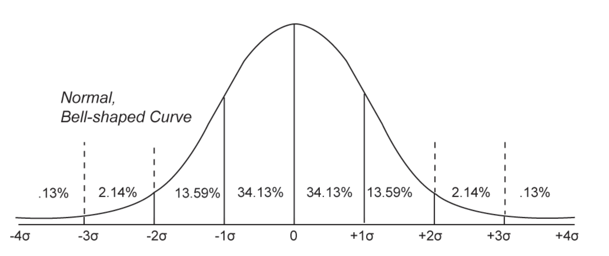
The p-value, then, describes the probability that you would observe a t-value as large (or larger) than the one that you observed if the null hypothesis were true. Practically, the p-value is the percentage of scores that fall further away from the mean from your t-value. A few examples, using the chart above :
A t-value of -3 would have a p-value of .0013, which means that there is a .13% chance that you would observe a t-value of -3 or more extreme if the null hypothesis were true.
A t-value of -1 would mean that our slope is as large as the sampling error that we found (the negative sign just means that our slope is negative), and would have a p-value of .1586. This means that we would expect 15.86% of random samples to be as large (or larger) than the slope that we found.
A t-value of +2 means that our slope is twice as large as the sampling error that we found, and would have a p-value of .0227, which means that we would expect 2.27% of random samples to be as large (or larger) than the slope that we found.
When R reports the p-value, it’s actually calculating the p-value for both sides of the distribution. That is, if your slope had a t-value of 3-standard errors below the mean, R would report a p-value of .026 or 2.6%, since it’s calculating the probability of the curve that falls to the left of 3 standard deviations below the mean, and also the probability of the curve that falls to the right of 3 standard deviations above the mean.
This is called a two-tailed test, and the logic of doing this by default is :
If we are really pretending to live in the world of the null hypothesis, then the slope we found in our sample is random. And if it’s random, we could have found a slope this extreme in either the positive OR negative direction. So when estimating the probability of this “random” slope occurring, it’s good to
A two-tailed test is more conservative, since you are doubling the p-value which increases the probability you report of finding a random slope due to chance. It’s good practice to be more conservative when reporting statistics, since people are biased to find results in their favor.
Some researchers report a one-tailed test - in R, you would just divide the reported p-value in R in half. The logic in doing this is that researchers claim if they have a strong prediction that their result will be positive (or negative) in direction, they can ignore the other side of the distribution. This has never made sense to me, since NHST is about random sampling (and not the alternative hypothesis) and I’m always a little suspicious of doing things that make it easier to show your hypothesis was supported.
Back to my pretend example : with a slope of .5, a standard error of .2, and a t-value of 2.5, R would report my p-value (two sided test) to be p = 0.0132. This means there is a 1.3% chance that I would observe a slope as different from zero as .5 (in either a positive or negative direction) due to random sampling error if the null hypothesis were true. This is a low probability! It is unlikely to happen due to random chance (if the null hypothesis were true). And I could say that it was a significant effect.
A “Significant” Effect
Okay, time to bring this together. IF the null hypothesis is true, then we expect to find a slope of zero. But we also know that we may not find a slope of zero all the time because of random sampling error. So the question is - how do we know whether our non-zero slope that we found in OUR study is due to sampling error (from a population where the true slope is zero), OR is due to some REAL RELATIONSHIP between the two variables????
The answer is that statisticians made up an arbitrary threshold of 5% (or a p-value of .05). If the probability of observing your slope, relative to your estimate of sampling error, is less than 5%, then it means it is UNLIKELY that you observed this slope because of taking some random sample from a population where the slope is zero (sampling error) and MORE LIKELY that you observed this slope because you took a random sample from a population where the slope is not zero.
In other words, as a researcher looking to support your theory, you “need” to find that the p-value is small, because this is the probability that you observed your slope IF THE NULL HYPOTHESIS were “true”. When this happens, researchers say the effect is “statistically significant”.
However - we need to be careful here! A “significant effect” only means that our made-up estimate of sampling error is much smaller than the slope that we observed in our study, and that this gives us a made-up sense of confidence that we can reject the null hypothesis and say that the data supports our theory.
A significant effect DOES NOT mean :
the effect we found in our study is real. we don’t have access to the truth, and are still making a guess about what the population is like based on our limited sample. so just because an effect is significant doesn’t make it real.
the effect we found in our study is not due to chance. there is still a chance that we are making a mistake in our estimate of sampling error. and even a small p-value of .000001 means there is a chance that we observed this slope due to random sampling error7.
the effect we found in our study is important. a “significant effect” doesn’t mean the effect is important or meaningful. That’s a question for your critical thinking brain : are these results important to society or me? How will this knowledge be used?
the study used valid methodology. a bad study designed with poorly defined and unreliable measures, a biased sample, or an improper experimental method that is “significant” is still a bad study.
So what does a significant effect mean again? A significant effect means : “We are unlikely to observe the slope we found in our sample (or one more extreme) if we were to draw a random sample from a population under conditions of the null hypothesis.”
The 95% Confidence Interval
To help ensure that the reader understands the slope found in the study is not the absolute truth, but instead is an estimate that might change from sample to sample, psychologists will often report the slope that they found, along with a range of slopes based on their expected sampling error. If you’ve ever seen a political poll reporting a “margin of error”, this is an estimate of sampling error.
Typically, researchers report the 95% Confidence Interval - this defines 95% of the distribution of sample estimates they might expect if they were to experience sampling error around the slope that they found. The 95% confidence interval is an area around the estimate of the original slope, and is defined by the following equation.
Positive and Negative 1.96 are the values of the normal distribution that contain 95% of the scores8. Multiplying this value by the estiamted standard error of the slope (which describes how much the slope might vary due to random sampling error) translates these boundaries into the same units as your slope. You can visualize the 95% Confidence Interval below.
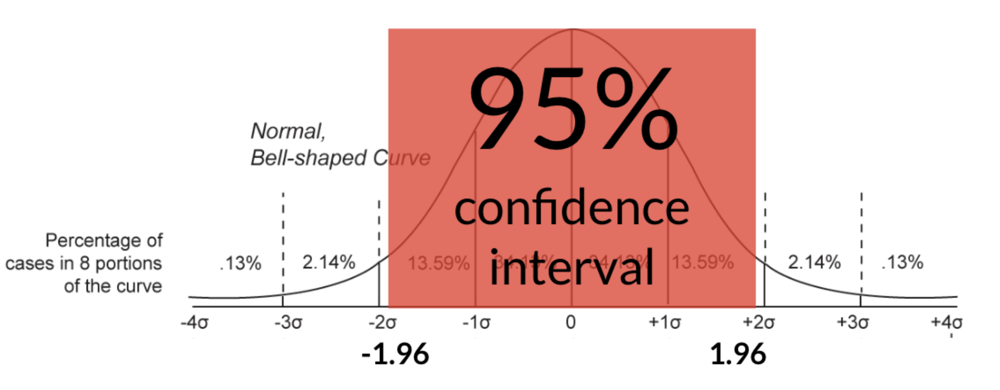
So, back to my pretend example. With a slope of .5, a standard error of .2, and a t-value of 2.5, and a p-value of 0.0132, my 95% confidence interval would be calculated as :
.5 + 1.96*.2 = .892 = this is the upper limit of my estimated 95% confidence interval
.5 - 1.96*.2 = .108 = this is the lower limit of my estimated 95% confidence interval
Note that a “significant effect” should show the upper and lower limits in the same direction as your original slope. So if your slope is positive, the 95% confidence interval should contain all positive numbers. If the 95% confidence interval contains zero (or a mix of positive and negative numbers) than the effect is not considered statistically significant.
I would then write this as : “I observed a significant and positive relationship between the DV and IV (b = .50, 95% CI = [.11, .89], t(200) = 2.5, p (two-tailed) = .0132).”
WHEW!!!
Calculating NHST in R : Very Easy!
Y’all will like this - it is very easy to do all the NHST stuff in R. First, you start with a linear model. I’m going to draw from the MBA study we’ve used before, and examine the relationship between Narcissism (NPI) and Age (age).
mba <-read.csv("~/Dropbox/!WHY STATS/Class Datasets/hormone_data.csv", stringsAsFactors = T)age.mod <-lm(NPI ~ age, data = mba)par(mfrow =c(1,1))plot(NPI ~ age, data = mba, pch =19, xlab ="Age", ylab ="Narcissism (NPI)")abline(age.mod, lwd =5, col ='red')
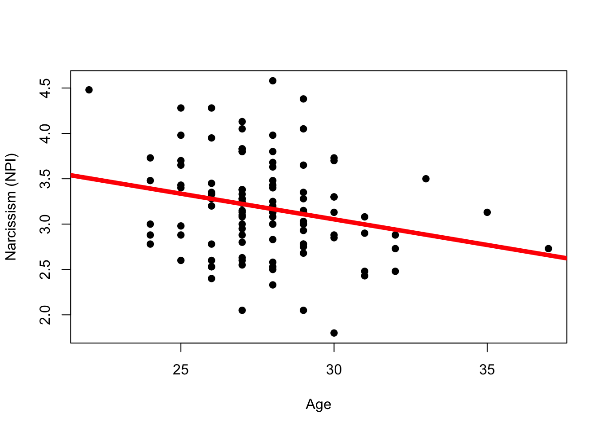
If I look at the coefficients of the model :
coef(age.mod)
(Intercept) age
4.74855460 -0.05651782
Someone with an age of 0 is predicted to have a Narcissism score of 4.7. These data don’t make sense, since our data were only collected on adults.
For every year someone ages, we predict their narcissism to go down by .0565. I can see this as negative slope I drew on the graph.
To do all the NHST stuff, all I need to run is the summary() function on the model that I defined; in this case I would run summary(age.mod) and get the following output :
summary(age.mod)
Call:
lm(formula = NPI ~ age, data = mba)
Residuals:
Min 1Q Median 3Q Max
-1.25302 -0.34583 0.00417 0.27644 1.41394
Coefficients:
Estimate Std. Error t value Pr(>|t|)
(Intercept) 4.74855 0.61722 7.693 7.8e-12 ***
age -0.05652 0.02217 -2.549 0.0122 *
---
Signif. codes: 0 '***' 0.001 '**' 0.01 '*' 0.05 '.' 0.1 ' ' 1
Residual standard error: 0.5219 on 106 degrees of freedom
(14 observations deleted due to missingness)
Multiple R-squared: 0.05778, Adjusted R-squared: 0.04889
F-statistic: 6.5 on 1 and 106 DF, p-value: 0.01222
formula : hey, that’s my model!
residuals : these describe some descriptive statistics for the residuals in my model.
coefficients : these will report the intercept and slope, along with the NHST statistics for these terms. You can ignore the intercept for now and just focus on the columns for the slope (age) :
age (estimate) : = - .057 = this is the estimate of the slope for age. There’s a negative relationship between these two variables.
std. error = .02217 = this is my estimate of the standard error (sampling error) for age. If the null hypothesis were true and the “true slope” was 0, I’d expect to find an average slope of .02 or -.02 just due to sampling error.
t-value = -2.55 = my slope is 2.55 times larger than the standard error. I can confirm that -.057 / .02217 = 2.55. Note that when reporting the t-value, it’s also important to look up the degrees of freedom (which is the sample size - the number of things in your model.) R reports these degrees of freedom next to the residual standard error.
p-value = 0.0122 = if the null were true, I’d expect to sample a slope of -.057 (or +.057) or more extreme about 1.22% of the time. This is a low probability and less than .05 (or 5%) so I get my little star and can say that I reject the null hypothesis - the relationship between age and narcissism is unlikely to be due to random sampling error from a null distribution.
95% Confidence Interval : this is not calculated, but I can do a rough estimate by taking my slope (-.057) and adding and subtracting 1.96 * .02, so the 95% CI = [-0.0962, -0.0178]. Note that this range does not include zero, so it’s another way of showing the effect is significant.
\(R^2\): hey look, it’s our good friend R2! Go ahead and focus on the “multiple R-squared” = .05778.
I would write this up as the following : “I observed a small but significant negative relationship between age and narcissism (b = -0.05, 95% CI = [-0.0962, -0.0178], R2 = .06, t(106) = -2.55, p = .01).
This shit is confusing, so here are some questions on NHST to assess your understanding. We will review answers to these in our next lecture, so save your work so we can review!!!
Thanks for reading! Lemme know if you have questions on Discord :)
You can access the fake dataset here if you want to follow along in R, but this is not necessary and I think reading these notes should suffice.↩︎
There are different ways that computers can take “random samples”, each with different merits. The default method R uses is ““Mersenne-Twister” From Matsumoto and Nishimura (1998). This stuff goes way beyond my pay grade; I imagine there are a few explanations on the internet. Let me know if you find a good one!
Note that when I use the set.seed() function before the sample() function, I’m telling R to “fix” the random number generator it uses. This gives me a consistent result time it runs the “random” sample() function. And if you also run set.seed(42) before you run sample(1:10, 1) you should also get the same answer of 1. You can specify any number within set.seed(), and only want to use this function when you want others to get the same answer as you (like when sharing code). Most of the time, we don’t want to use this function because we want things to be “random”. Let me know if this is confusing! I can try to clarify.↩︎
A sample size of 150 may still seem small, but it’s around the average in fields like social and personality psychology (Fraley et al., 2022) and well above the average in other fields like neuroscience (Button et al., 2013).↩︎
This conceptual equation won’t give you what R calculates, because R will use something called the pooled variance in its calculation of the standard deviation (since the null hypothesis assumes no relationship between the DV and IV, it’s better to calculate a weighted average of the DV and IV for your estimate of the standard deviation. There’s a long equation to calculate this that I used to students and have them do “by hand”. However, over the years I realize that this does not help students learn, and that even the complicated equation is an oversimplification of a much more involved proof which you can learn about in more advanced classes if you want.↩︎
This is called Type I error (a false positive) - when we incorrectly reject the null hypothesis. The probability of committing Type I error is defined by the p-value you set to reject the null hypothesis, typically .05 = 5%. Type II error is when you incorrectly reject the alternative hypothesis (false negative). we won’t cover how to calculate Type II error this semester (or the related concept of Statistical Power - which is an estimate of the probability you can correctly support your theory as a researcher), but they are important ideas. Here’s an okay video that seems to give a good overview of these types of error for those students who are interested, and here’s a video walking through how to do this in R. Let me know if you have questions / find better videos!↩︎
The exact range of the 95% confidence interval will not always be within ±1.96 standard errors of the slope - that’s the theoretical range based on a normal distribution. In practice, the range will depend on certain features of your sample and model (much like the t-distribution we discussed), but will approach 1.96 as your sample size increases; and if you want to be more conservative, you can round up to 2*SEb as long as your sample size is > 30.